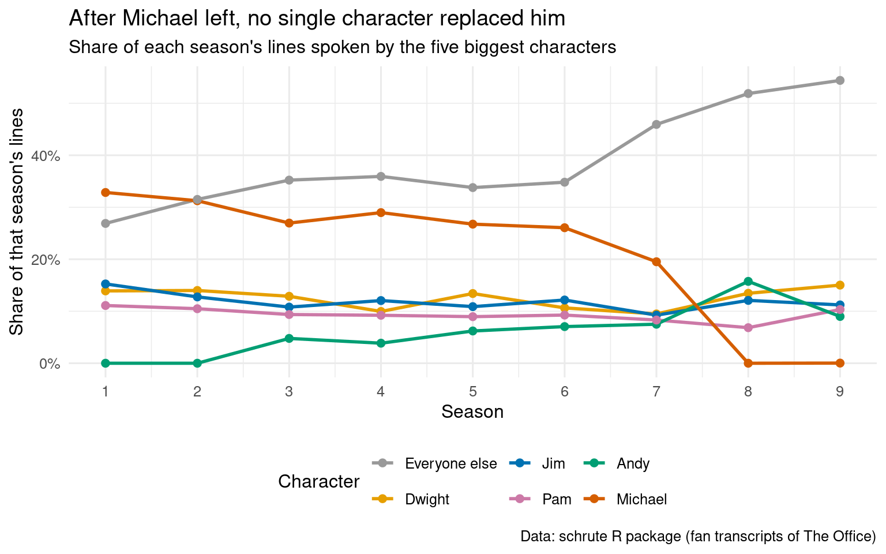
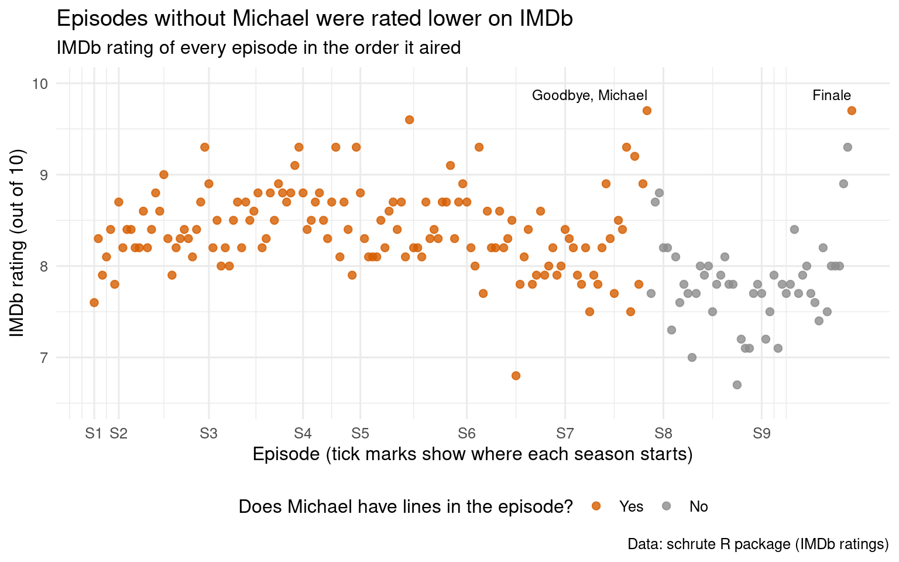

Code
# install.packages("schrute")
library(tidyverse)
library(schrute)
library(knitr)
office <- schrute::theofficeWho carries the show, how Michael’s exit lines up with the ratings, and what the stage directions reveal, using every line of The Office.
Nelson Hernandez Ubeda
October 14, 2026
The Office (US) ran for nine seasons, from 2005 to 2013, and followed the employees of the Dunder Mifflin paper company in Scranton, Pennsylvania. Because every line of the show has been transcribed, the whole series can be treated as text data: who says what, how often, and how the show changed over time.
In this project I use string functions and regular expressions to answer three questions about my favorite show:
Each row is one line of dialogue. The columns I use are season, episode, episode_name, character (who says the line), text (the line itself), text_w_direction (the line with the script’s stage directions in square brackets, such as “[laughs]”), and imdb_rating (the episode’s IMDb rating). The data has 55,130 lines across 9 seasons.
The transcripts were typed by fans, so character names contain typos. Michael alone is misspelled ten different ways (“Micheal,” “Michel,” “Micahel,” and so on), and some names have stray quotation marks, periods, or capital letters. I clean the names in three steps: str_trim() removes extra spaces, str_remove_all() with the regular expression [".] deletes quotation marks and periods, and str_to_title() fixes capitalization (“MIchael” becomes “Michael”). Then fct_recode() maps the remaining misspellings to the correct name. About 120 lines are spoken by several characters at once (such as “Jim and Pam”); I leave those as their own speaker.
office <- office |>
mutate(
who = character |>
str_trim() |>
str_remove_all("[\".]") |>
str_to_title(),
who = fct_recode(
who,
"Michael" = "Micheal", "Michael" = "Michel", "Michael" = "Micahel",
"Michael" = "Michae", "Michael" = "M Ichael", "Michael" = "Micael",
"Michael" = "Michal", "Michael" = "Miichael", "Michael" = "Mihael",
"Dwight" = "Dight",
"Angela" = "Anglea",
"Darryl" = "Daryl", "Darryl" = "Darrly", "Darryl" = "Darry",
"Phyllis" = "Phylis", "Phyllis" = "Phyliss"
)
)To see how the dialogue is shared, I keep the five characters with the most lines and lump everyone else together with fct_lump_n(). Then I calculate each character’s share of the lines in every season.
season_share <- office |>
mutate(who_top = fct_lump_n(who, n = 5, other_level = "Everyone else")) |>
count(season, who_top) |>
complete(season, who_top, fill = list(n = 0)) |> # seasons where a character has no lines get a 0
group_by(season) |>
mutate(share = n / sum(n)) |>
ungroup() |>
mutate(who_top = fct_reorder2(who_top, season, share)) # legend order matches line ends
michael_s1_s6 <- season_share |>
filter(who_top == "Michael", season <= 6) |>
pull(share) |>
range()
others_first <- season_share$share[season_share$who_top == "Everyone else" & season_share$season == 1]
others_last <- season_share$share[season_share$who_top == "Everyone else" & season_share$season == 9]character_colors <- c(
"Michael" = "#D55E00",
"Dwight" = "#E69F00",
"Jim" = "#0072B2",
"Pam" = "#CC79A7",
"Andy" = "#009E73",
"Everyone else" = "grey60"
)
ggplot(season_share, aes(x = season, y = share, color = who_top)) +
geom_line(linewidth = 1) +
geom_point(size = 2) +
scale_x_continuous(breaks = 1:9) +
scale_y_continuous(labels = scales::label_percent()) +
scale_color_manual(values = character_colors) +
labs(
title = "After Michael left, no single character replaced him",
subtitle = "Share of each season's lines spoken by the five biggest characters",
x = "Season",
y = "Share of that season's lines",
color = "Character",
caption = "Data: schrute R package (fan transcripts of The Office)"
) +
theme_minimal(base_size = 12) +
theme(legend.position = "bottom")
Each line shows one character’s share of all lines spoken in a season. For the first six seasons Michael speaks between 26% and 33% of all lines, about twice as many as anyone else. His share falls in Season 7, the season he leaves, and drops to zero in Season 8 (he only returns for a couple of lines in the series finale).
Nobody takes over his role. Andy, who joins in Season 3, gets his biggest share in Season 8 and briefly becomes the top speaker, but he never comes close to Michael’s level. Dwight and Jim stay roughly where they were, and Pam’s share actually dips. Instead, the gray line shows the dialogue spreading across the ensemble: the share spoken by everyone outside the top five grows from 27% in Season 1 to 54% in Season 9. The later seasons of The Office are much more of an ensemble show.
Next I calculate, for every episode, the share of its lines spoken by Michael and compare it with the episode’s IMDb rating. Two-part episodes appear as a single episode in this data.
episodes <- office |>
group_by(season, episode) |>
summarize(
episode_name = first(episode_name),
imdb_rating = first(imdb_rating),
michael_share = mean(who == "Michael"),
.groups = "drop"
) |>
arrange(season, episode) |>
mutate(
order = row_number(),
michael = if_else(michael_share > 0, "Yes", "No") |>
fct_relevel("Yes")
)
season_starts <- episodes |>
group_by(season) |>
summarize(start = min(order))
top_episodes <- episodes |>
slice_max(imdb_rating, n = 1)
rating_with <- mean(episodes$imdb_rating[episodes$michael == "Yes"])
rating_without <- mean(episodes$imdb_rating[episodes$michael == "No"])
n_without <- sum(episodes$michael == "No")
michael_episodes <- filter(episodes, michael_share > 0)
r_within <- cor(michael_episodes$michael_share, michael_episodes$imdb_rating)ggplot(episodes, aes(x = order, y = imdb_rating, color = michael)) +
geom_point(size = 2, alpha = 0.8) +
geom_text(
data = top_episodes,
aes(x = order, y = imdb_rating, label = episode_name),
inherit.aes = FALSE,
vjust = -1, hjust = "inward", size = 3.2
) +
scale_x_continuous(
breaks = season_starts$start,
labels = str_c("S", season_starts$season)
) +
scale_y_continuous(limits = c(6.5, 10)) +
scale_color_manual(values = c("Yes" = "#D55E00", "No" = "grey55")) +
labs(
title = "Episodes without Michael were rated lower on IMDb",
subtitle = "IMDb rating of every episode in the order it aired",
x = "Episode (tick marks show where each season starts)",
y = "IMDb rating (out of 10)",
color = "Does Michael have lines in the episode?",
caption = "Data: schrute R package (IMDb ratings)"
) +
theme_minimal(base_size = 12) +
theme(legend.position = "bottom")
Each dot is one episode, placed in the order it aired, with its height showing its IMDb rating. Orange dots are episodes where Michael has at least one line and gray dots are episodes where he has none. The gray dots cluster at the end of the series and sit visibly lower: episodes with Michael average 8.41 while the 49 episodes without him average 7.81. Most of the lowest-rated episodes of the show come from Season 8, the first season without him. The two highest-rated episodes (both 9.7) are labeled: “Goodbye, Michael,” his farewell, and the series finale, where he makes a brief return.
However, among the episodes Michael is in, how much he talks has essentially no relationship with the rating (correlation 0). Episodes where Michael dominates the dialogue are not rated higher, on average, than episodes where he has a smaller part. So the plot doesn’t show that “more Michael is better,” but it instead highlights that the show was rated lower after he left, which could also reflect the show getting older and losing other writers and cast members at the same time.
First, a quick check on the show’s most famous running joke. The regular expression that'?s what she said, with ignore_case = TRUE, matches the phrase with or without the apostrophe and in any capitalization.
The phrase shows up in 33 lines across the whole series, and Michael says it 23 of those times (70%). It peaks in Season 4, with 9 uses.
The text_w_direction column keeps the script’s stage directions, which describe how a line is delivered: “[laughs],” “[whispering],” “[to Jim].” To pull them out I use a lookbehind and a lookahead together:
(?<=\[) is a lookbehind that requires an opening bracket right before the match,[^\]]+ matches any characters that are not a closing bracket,(?=\]) is a lookahead that requires a closing bracket right after the match.The result is the text inside each pair of brackets, without the brackets themselves. Then I use five regular expressions to flag the kind of direction. For example, laugh|chuckl|giggl catches “laughs,” “chuckling,” and “giggles,” and \bsing(s|ing)?\b|\bsang\b catches forms of “sing” without matching words like “singular.” For each of the eight characters with the most lines, the table shows how many of their lines carry each kind of direction, per 1,000 lines, so that characters with more lines aren’t automatically ranked higher.
directions <- office |>
mutate(
stage = str_extract_all(text_w_direction, "(?<=\\[)[^\\]]+(?=\\])"), # text inside [ ]
stage = map_chr(stage, ~ str_to_lower(str_flatten(.x, " | "))) # one string per line
)
summarize_directions <- function(df) {
df |>
summarize(
lines = n(),
laughing = 1000 * mean(str_detect(stage, "laugh|chuckl|giggl")),
singing = 1000 * mean(str_detect(stage, "\\bsing(s|ing)?\\b|\\bsang\\b")),
sighing = 1000 * mean(str_detect(stage, "\\bsigh")),
whispering = 1000 * mean(str_detect(stage, "\\bwhisper")),
crying = 1000 * mean(str_detect(stage, "\\b(cry|cries|crying|cried|sobs?|sobbing|tearing up|teary)\\b"))
)
}
top8 <- office |>
count(who, sort = TRUE) |>
slice_head(n = 8) |>
pull(who) |>
as.character()
by_character <- directions |>
filter(who %in% top8) |>
mutate(who = fct_infreq(as.character(who))) |> # most lines first
group_by(who) |>
summarize_directions() |>
mutate(who = as.character(who))
direction_table <- bind_rows(
by_character,
directions |> summarize_directions() |> mutate(who = "All characters")
)
pct_with_direction <- mean(directions$stage != "")
andy <- filter(direction_table, who == "Andy")
everyone <- filter(direction_table, who == "All characters")direction_table |>
select(who, lines, laughing, singing, sighing, whispering, crying) |>
kable(
digits = 1,
format.args = list(big.mark = ","),
col.names = c("Character", "Lines", "Laughing", "Singing", "Sighing", "Whispering", "Crying"),
caption = "Stage directions per 1,000 lines for the eight characters with the most lines"
)| Character | Lines | Laughing | Singing | Sighing | Whispering | Crying |
|---|---|---|---|---|---|---|
| Michael | 10,950 | 16.8 | 3.2 | 6.8 | 3.9 | 1.9 |
| Dwight | 6,851 | 14.2 | 2.2 | 4.1 | 5.4 | 2.3 |
| Jim | 6,307 | 14.0 | 0.8 | 2.7 | 3.3 | 1.0 |
| Pam | 5,032 | 16.1 | 1.0 | 3.2 | 4.8 | 2.4 |
| Andy | 3,754 | 21.6 | 13.6 | 1.9 | 0.8 | 1.3 |
| Angela | 1,571 | 11.5 | 2.5 | 5.1 | 4.5 | 7.0 |
| Kevin | 1,564 | 15.3 | 5.8 | 0.6 | 1.3 | 3.8 |
| Erin | 1,440 | 26.4 | 2.1 | 0.7 | 4.2 | 0.7 |
| All characters | 55,130 | 16.4 | 3.7 | 3.4 | 3.7 | 2.0 |
Only 17% of lines carry any stage direction, so these rates are small, but a few characters stand out clearly. Andy has a singing direction 13.6 times per 1,000 lines, compared with 3.7 for the cast as a whole. That matches his character, a former member of Cornell’s a cappella group who breaks into song constantly. Erin has the most laughing directions, Angela has by far the most crying directions, and Michael leads the table in sighing. This makes sense with the character’s personalities in ways fans can note easily, such as Dwight having the highest whispering rate as the paranoid one of the bunch.
The first two sections tell one story from two angles. Michael speaks about a third of the lines for most of the show, and when he leaves the dialogue spreads out across the ensemble rather than shifting to a new lead. Over the same stretch the episodes’ IMDb ratings fall, even though, while he was on the show, episodes with more Michael were not rated higher than episodes with less. The stage directions add character detail that plain dialogue can’t: Andy sings, Erin laughs, Angela cries, and Michael, the boss responsible for 70% of the show’s “that’s what she said” jokes, sighs.
However, as someone with vast experience in NLP, I can confirm that there are limits to what this text can show. The transcripts and their stage directions were typed by fans, so different episodes may have been transcribed with different levels of detail, and a regular expression can’t tell a sarcastic “[laughs]” from a real one. Likewise, the ratings comparison can’t separate Michael’s absence from everything else that changed in the last two seasons.
The data comes from the schrute R package by Brad Lindblad, available on CRAN (https://cran.r-project.org/package=schrute) and GitHub (https://github.com/bradlindblad/schrute). The package contains the full transcript of The Office (US) in tidy format, one row per line.
According to the package documentation, the original source of the transcripts is the fan transcription site Forever Dreaming (https://transcripts.foreverdreaming.org). The episode ratings and vote counts in the package come from IMDb.